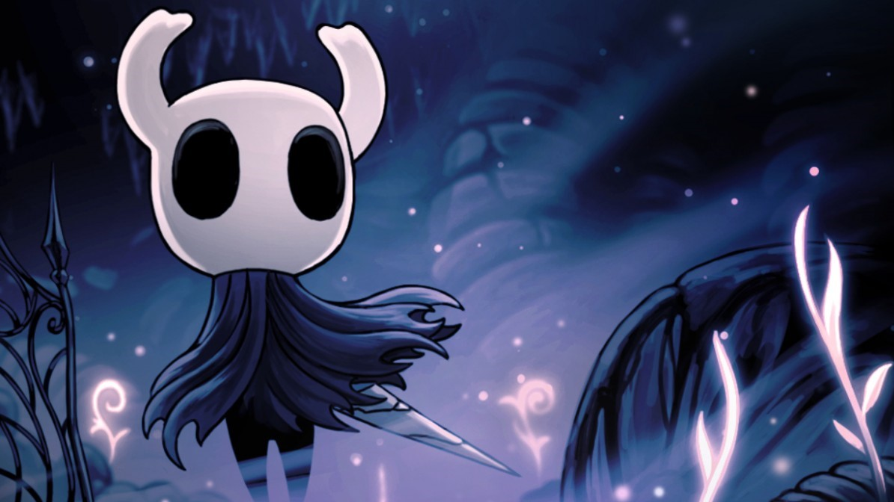

Los Amuletos
Es el personaje que el jugador controla a lo largo de la historia principal en Hollow Knight.
Al principio del juego, el Caballero está equipado solo con su Viejo Aguijón y la habilidad para curarse a sí mismo usando ALMA. A lo largo del juego, consigue nuevos poderes y Objetos que le permitirán avanzar dentro de Hallownest, el reino donde se desarrolla el juego, desbloqueando nuevas zonas y personajes.
Lista
| Icono | Nombre y efecto | Muescas |
|---|---|---|

|
Brujula Caprichosa
Susurra su ubicación al portador siempre que se abra el mapa. |

|
|
|
Devoraalmas
Aumenta mucho la cantidad de ALMA obtenida al golpear a un enemigo con el aguijón. |
|